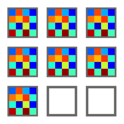

Mesurer la taille d’un faisceau laser#
Cet exemple montre comment mesurer la taille d’un faisceau laser le long de l’axe de propagation, en utilisant DataLab :
Ouvrir toutes les images d’un dossier
Appliquer un seuillage aux images
Extraire le profil d’intensité le long d’une ligne horizontale
Ajuster le profil d’intensité à une fonction gaussienne
Calculer la largeur à mi-hauteur (FWHM) du profil d’intensité
Essayer une autre méthode : extraire le profil d’intensité radial
Calculer la FWHM du profil d’intensité radial
Effectuer la même analyse sur une pile d’images et sur les profils résultants
Tracer la taille du faisceau en fonction de la position le long de l’axe de propagation
Tout d’abord, nous ouvrons DataLab et chargeons les images :

Ouvrir les fichiers d’images avec « Fichier > Ouvrir… », ou avec le bouton  dans la barre d’outils, ou en faisant glisser et déposer les fichiers dans DataLab (sur le panneau de droite).#
dans la barre d’outils, ou en faisant glisser et déposer les fichiers dans DataLab (sur le panneau de droite).#
Sélectionnez les images de test « TEM00_z_*.jpg » et cliquez sur « Ouvrir ».#
Les images sélectionnées sont chargées dans le panneau « Images ». La dernière image est affichée dans la fenêtre principale. Sur chaque image, nous pouvons zoomer en appuyant sur le bouton droit de la souris et en faisant glisser la souris vers le haut et vers le bas. Nous pouvons également déplacer l’image en appuyant sur le bouton du milieu de la souris et en faisant glisser la souris.
Zoomer avec le bouton droit de la souris. Déplacer l’image avec le bouton du milieu de la souris.#
Note
Si nous voulons afficher les images côte à côte, nous pouvons sélectionner l’entrée « Distribuer sur une grille »  dans le menu « Opérations ».
{kind=link}
Images distribuées sur une grille de 4 lignes#
Mais, revenons à l’affichage initial en sélectionnant l’entrée « Réinitialiser les positions des images » dans le menu « Opérations ».
Si nous sélectionnons l’une des images, nous pouvons voir qu’il y a du bruit de fond, il peut donc être utile d’appliquer un seuillage aux images.
Sélectionnez l’une des images dans le panneau « Images », sélectionnez l’image associée dans le panneau de visualisation, et activez l’outil « Section transversale »  dans la barre d’outils verticale à gauche du panneau de visualisation (cet outil est une fonctionnalité PlotPy). Sur cette figure, nous pouvons voir que le bruit de fond est d’environ 30 lsb (pour afficher le marqueur de courbe, nous avons dû sélectionner la courbe de profil et cliquer avec le bouton droit de la souris dessus pour afficher le menu contextuel, puis sélectionner « Marqueurs > Lié à l’élément actif »).#
dans la barre d’outils verticale à gauche du panneau de visualisation (cet outil est une fonctionnalité PlotPy). Sur cette figure, nous pouvons voir que le bruit de fond est d’environ 30 lsb (pour afficher le marqueur de courbe, nous avons dû sélectionner la courbe de profil et cliquer avec le bouton droit de la souris dessus pour afficher le menu contextuel, puis sélectionner « Marqueurs > Lié à l’élément actif »).#
Une autre façon de mesurer le bruit de fond est d’utiliser l’outil « Statistiques de l’image » dans la barre d’outils verticale à gauche du panneau de visualisation. Il affiche des statistiques sur une zone rectangulaire définie en faisant glisser la souris sur l’image. Cela confirme que le bruit de fond est d’environ 30 lsb.#

Après avoir appliqué un seuil à 35 lsb (avec « Traitement > Seuillage… »), nous pouvons calculer une position plus précise du centre du faisceau en utilisant « Calcul > Centre de gravité ».#
Ensuite, nous pouvons extraire un profil de ligne le long de l’axe horizontal avec « Opérations > Profils d’intensité > Profil de ligne ». Nous définissons la position de la ligne sur la position du centre de gravité calculée précédemment (c’est-à-dire 668).#

Le profil d’intensité est affiché dans le panneau « Signaux ». Nous pouvons ajuster le profil à une fonction gaussienne avec « Traitement > Ajustement > Ajustement gaussien ». Ici, nous avons sélectionné les deux signaux.#
Si nous revenons au premier signal, le profil d’intensité, nous pouvons également calculer directement la FWHM avec « Calcul > Largeur à mi-hauteur ». La boîte de dialogue « Résultats » affiche beaucoup d’informations sur le calcul, y compris la valeur FWHM (qui est la colonne L, « L » pour « Longueur » car la forme du résultat est un segment et FWHM est la longueur du segment).#

La largeur à mi-hauteur est également affichée sur la courbe, avec une étiquette optionnelle (ici, le titre de cette mesure a été affiché avec « Affichage > Afficher les titres des objets graphiques » ou le bouton  dans la barre d’outils).#
dans la barre d’outils).#
Maintenant, essayons une autre méthode pour mesurer la taille du faisceau.
À partir du panneau « Images », nous pouvons extraire le profil d’intensité radial avec « Opérations > Profils d’intensité > Profil radial ».

Le profil d’intensité radial peut être calculé autour de la position du centre de gravité, ou autour du centre de l’image, ou autour d’une position définie par l’utilisateur. Ici, nous avons sélectionné la position du centre de gravité.#
Le profil d’intensité radial est affiché dans le panneau « Signaux ». Il est plus lisse que le profil de ligne, car il est calculé à partir d’un plus grand nombre de pixels, ce qui permet de lisser le bruit.#
Toutes ces opérations et calculs que nous avons effectués sur une seule image peuvent être appliqués à toutes les images du panneau « Images ».
Pour ce faire, nous commençons par nettoyer le panneau « Signaux » (avec « Édition > Tout supprimer » ou le bouton dans la barre d’outils). Nous nettoyons également les résultats intermédiaires dans le panneau « Images » en sélectionnant les images obtenues lors de notre prototypage et en les supprimant individuellement (avec « Édition > Supprimer » ou le bouton  ).
).
{kind=link}
Ensuite, nous sélectionnons toutes les images dans le panneau « Images » (individuellement, ou en sélectionnant l’ensemble du groupe « g001 »).
Nous appliquons le seuil à toutes les images, puis nous extrayons le profil d’intensité radial pour toutes les images (après avoir sélectionné l’ensemble du groupe « g002 » - il devrait être automatiquement sélectionné si vous aviez sélectionné « g001 » avant d’appliquer le seuil).#

Le panneau « Signaux » contient maintenant tous les profils d’intensité radiaux.#

Nous pouvons calculer la FWHM de tous les profils d’intensité radiaux : la boîte de dialogue « Résultats » affiche les valeurs FWHM pour tous les profils.#
Note
Si vous souhaitez afficher à nouveau les résultats de calcul, vous pouvez sélectionner l’entrée « Afficher les résultats »  dans le menu « Calcul », ou le bouton « Afficher les résultats » , en dessous de la liste des images :
dans le menu « Calcul », ou le bouton « Afficher les résultats » , en dessous de la liste des images :

Enfin, nous pouvons tracer la taille du faisceau en fonction de la position le long de l’axe de propagation. Pour ce faire, nous utilisons la fonction « Tracer les résultats » dans le menu « Calcul ». Cette fonction permet de tracer les ensembles de données de résultats en choisissant les axes x et y parmi les colonnes de résultats. Ici, nous choisissons de tracer les valeurs FWHM (L) en fonction de l’index de l’image (Indexes).#
{kind=link}

Le tracé est affiché dans le panneau « Signaux » et montre que la taille du faisceau augmente avec la position le long de l’axe de propagation (la position est ici en unités arbitraires, l’index de l’image).#
Nous pouvons également étalonner les axes X et Y en utilisant « Traitement > Étalonnage linéaire ». Ici, nous avons réglé l’axe X sur la position en mm (et entré le titre et l’unité dans le groupe de boîtes « Propriétés »).#
Enfin, nous pouvons enregistrer l’espace de travail dans un fichier  . L’espace de travail contient toutes les images et signaux qui ont été chargés ou traités dans DataLab. Il contient également les résultats des calculs, les paramètres de visualisation (cartes de couleurs, contraste, etc.), les métadonnées et les annotations.
. L’espace de travail contient toutes les images et signaux qui ont été chargés ou traités dans DataLab. Il contient également les résultats des calculs, les paramètres de visualisation (cartes de couleurs, contraste, etc.), les métadonnées et les annotations.
Si vous souhaitez charger à nouveau l’espace de travail, vous pouvez utiliser « Fichier > Ouvrir un fichier HDF5… » (ou le bouton  dans la barre d’outils) pour charger l’ensemble de l’espace de travail, ou « Fichier > Parcourir un fichier HDF5… » (ou le bouton
dans la barre d’outils) pour charger l’ensemble de l’espace de travail, ou « Fichier > Parcourir un fichier HDF5… » (ou le bouton  dans la barre d’outils) pour charger uniquement une sélection d’ensembles de données de l’espace de travail.
dans la barre d’outils) pour charger uniquement une sélection d’ensembles de données de l’espace de travail.